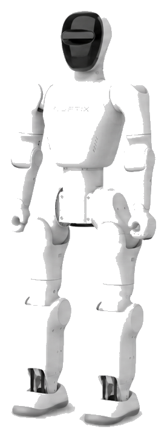
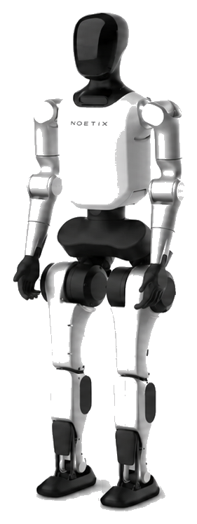
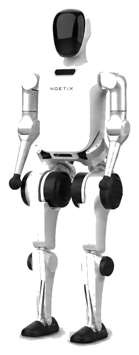

NOETIX ROBOTICS · AI DATA FACTORY
面向真实场景的人形机器人
面向真实场景的人形机器人
多模态数据生产系统
以 Bumi、N2、E1 为核心对象，把需求输入、AI 指标生成、采集任务、自动评分、审批门禁、失败复采和知识沉淀，组织成一个可体验、可解释、可扩展的数据工厂原型。
Bumi · N2 · E1
不同机器人型号对应不同采集场景、传感器通道和质量评分重点。
RGB-D / IMU / 关节编码器
语音 · 表情 · 口型 · 眼神
力控 · 末端执行器 · 系统日志



DEMO samples
200
采集结果与自动评分表
Generated tasks
347
采集任务表，含自动生成与复采任务
Retry queue
153
失败样本与复采队列
Trainable candidates
109
训练候选池记录
PRODUCT SITE
选择一个模块进入
主页只保留总览和入口。每个模块都是独立页面，进入后再查看详细内容，让展示中心更像一个完整网站，而不是一篇超长报告。